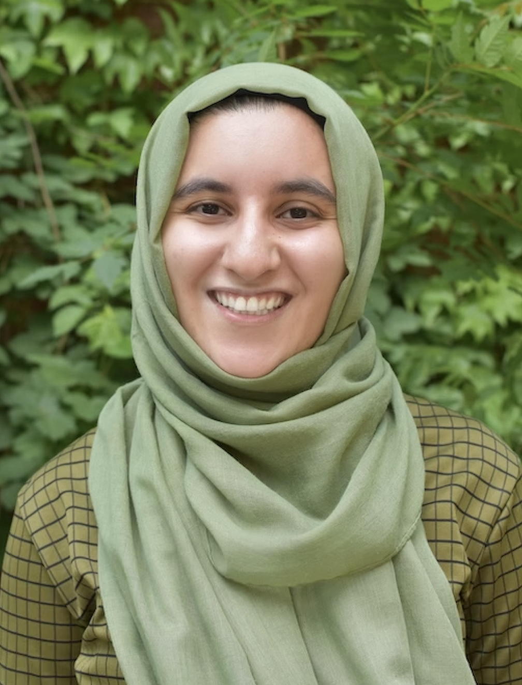

|
Hello! I am a Masters Student at the MIT Laboratory for Information & Decision Systems and am concentrating in AI. I am interested in reinforcement learning, deep learning, and robotics, and enjoy working on problems at the intersection of artificial intelligence and human decision-making. I recently finished my computer science undergraduate studies at MIT, where I worked with Professor Jonathan P. How (AeroAstro) and Professor Luca Carlone (AeroAstro) on sharing skills in continual learning and perception for self driving cars. During my undergrad, I interned at Amazon Robotics with Carlos Vallespi and Uber ATG with Anatoly Mitlin. In my spare-time, I enjoy having discussions on morality, spirituality, and religion as part of MIT's Addir Interfaith Community. I am also committed to improving the condition of underprivileged women and children as part of Helping Hand Relief & Development and Indian Muslim Relief & Charities. I hope to combine technology with my passion to help the developing world and beyond. Feel free to reach out and have a conversation! |
 |
{kind=link}
News
- November 2020: New Talk! - I will be giving a TEDxMIT Talk - Bridging the Distance - in a month on the importance of interfaith dialouge and its connection to my research. Check it out on December 20th here!
- September 2020: New Talk! - I began my Masters at MIT!
- June 2020: Internship - I joined Amazon Robotics working with Anatoly Mitlin, Steven Chen, Andreas Kolling.
- June 2019: Internship - I joined Uber's Advanced Technology Group working on small object detection on the Perception Team.
- February 2019: I started as a teaching assistant for 6.141: Robotics, Science & Systems. Check out my concluding thoughts on the class here!
Research

|
Marwa Abdulhai, Austin Floyd, Sean Patrick Kelley, David Klee, Luxas Novak, Rose E. Wang Robotics: Science and Systems I, 2017. Video | Project Page A whirlwind of an experience where my team and I developed a fast, autonomous, ~maze-solving~ racecars equipped with no machine learning technology and a decorative safety controller. |